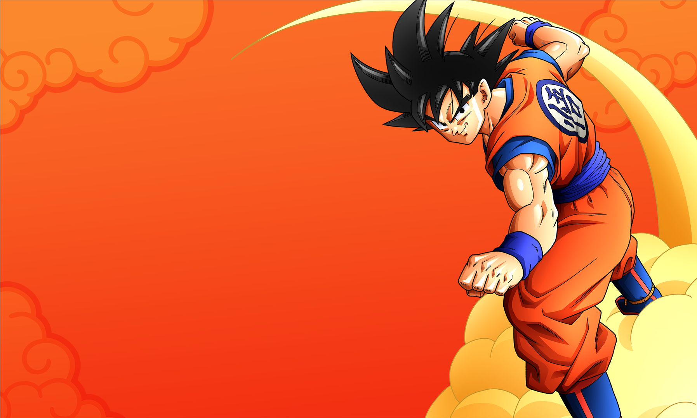

Anime Recommendations By Vyoam


two high school geniuses, Shirogane and Kaguya, can't admit they're in love, so each tries to win a confession of affection from the other. This results in increasingly ridiculous mind games in which they end up outsmarting themselves.

Yusuke Urameshi, a teenage delinquent who is struck by a car while trying to save a child's life. While in the afterlife, he is named the Spirit Detective by Koenma & Botan and must investigate cases concerning demons and apparitions.

In the year 2019 AD, a mysterious flash suddenly petrifies nearly all human life. 3,700 years pass with the human race frozen in stone, until in April 5738, a 15-year-old prodigy named Senku Ishigami is suddenly revived to find himself in a world where all traces of human civilization have been eroded by time. Senku sets up a basecamp and begins to study the petrified humans in order to determine the cause of the event, as well as a cure.